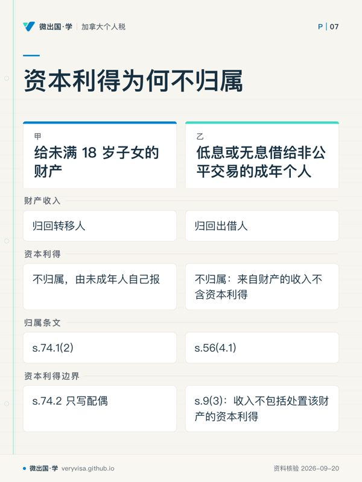
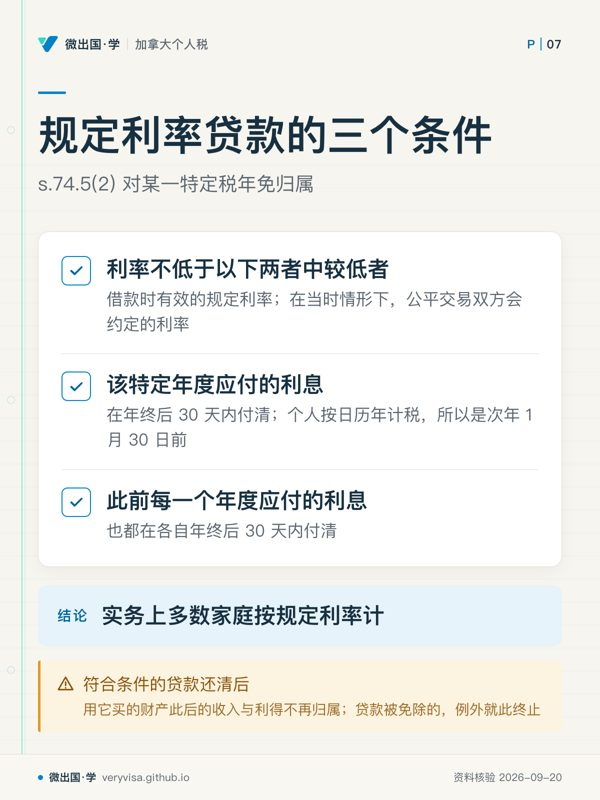

核实日期：2026-09-13｜现行口径：2026 税年｜复核：2026-12-20（规定利率每季度公布一次，2027 年第一季度的利率年底前会出，出了就要回头补表） 本页讲规则与判断顺序。家庭之间借钱、赠与、过户，结果高度依赖事实细节（钱从哪来、签了什么、利息谁付、有没有第三方），动手前请回《所得税法》原文与 CRA 页面，并请持牌会计师或税务律师看具体安排。
华人家庭里常见两种场景。一种是夫妻收入差距大：一方年薪高、边际税率高，另一方收入低甚至没有收入，于是想把钱放到低收入一方名下去投资，让利息和股息按低税率交税。另一种是长辈出钱：父母给成年子女首付，给未成年的孙辈存一笔教育金，或者借一笔钱给孩子去投资。
这两种安排在加拿大都要先过归属规则 (attribution rules) 这一关。它的核心只有一句：钱转给了配偶或未成年子女，钱赚的收入在计税时可能仍算原主人的。算错的后果不是罚一笔小钱，而是整笔收入被 CRA 归回原主人名下重算，外加利息。反过来，把规则用对，规定利率贷款 (prescribed rate loan) 是少数被条文明确允许的家庭收入分配方式；而 2026 年四个季度的规定利率都是 3%，是近几年较低的水平。
学完你能做到
- 按「给了谁、是赠与还是借、赚的是收入还是资本利得」三问，判断一笔家庭转移的收入该写进谁的报税表。
- 查出借款那一季的规定利率，算出规定利率贷款当年应付的利息，并排出次年 1 月 30 日前的付息动作。
- 分清配偶、未满 18 岁子女、成年子女三种对象在 s.74.1、s.74.2、s.56(4.1) 下的不同结果，说出哪一格资本利得不归属。
- 识别配偶 TFSA、配偶 RRSP、CCB 存款、分居期间等法定例外，以及背靠背借贷、担保这类会被视同转移的安排。
- 为一户家庭的赠与或贷款方案写出自查清单，指出哪几处需要交给持牌专业人士判断。
常见误解
很多人以为「钱转到太太名下开户，利息就算她的」。实际上，s.74.1(1) 规定转给配偶或同居伴侣的财产，其收入在转移人为加拿大居民、双方仍为配偶的期间，视为转移人的收入；账户开在谁名下不改变计税结果。
很多人以为「给孩子的钱，赚的全算孩子的」。实际上，给未满 18 岁子女的钱，利息和股息归回给出钱的父母，直到孩子年满 18 岁的那一年；只有卖出时的资本利得不归回，因为 s.74.2 只管配偶。
很多人以为「给成年子女钱去投资，也会被归属」。实际上，s.74.1 不管成年子女；赠与成年子女的钱不归属。只有低息或无息借给成年亲属、且主要目的之一是减税时，s.56(4.1) 才把财产收入归回出借人，而且不含资本利得。
很多人以为「规定利率贷款签一次就一劳永逸，利息哪天付都行」。实际上，每一年的利息都必须在年终后 30 天内，也就是次年 1 月 30 日前实际付清；有一年没做到，这一年和以后所有年份都失去例外。
很多人以为「规定利率降了，已有的贷款利率可以跟着调低」。实际上，条文看的是借款发生时有效的规定利率，利率锁定在借款那一刻；想改用更低的利率，就不是调整原贷款那么简单，要个案请专业人士设计。
一、制度设计与底层逻辑：累进税率为什么需要一道家庭防线
1.1 按个人报税，而收入可以在家里搬
加拿大个人所得税按个人计算，税率累进。同样 10 万元的投资收入，放在边际税率高的一方和放在几乎没有收入的一方，税负差距可能很大。如果财产可以在家庭成员之间随意过户、收入就跟着过户，累进税率就等于对家庭失效：高收入者只要把生钱的资产挂到家人名下，就能压低整个家庭的税负，而钱的实际控制和风险可能一点没变。
归属规则就是这道防线。它不禁止过户，也不否认所有权转移，只是在计税时把收入「视为」(deemed) 仍属于转移人。s.74.1 的原文用的正是 deemed to be income of the individual and not of that person。
1.2 规则为什么只盯配偶和未成年人
家庭里最容易发生「名义归一方、实际仍是一家的钱」的，是配偶和未成年子女。s.74.1 因此划了两类对象：配偶或同居伴侣；未满 18 岁、与转移人非公平交易 (non-arm's length) 的人，或转移人的侄甥辈。成年子女被排除在 s.74.1 之外，意味着给成年子女的赠与，收入就是子女自己的。
但成年亲属之间还有另一条缝：不送钱，而是无息借钱。s.56(4.1) 补的就是这条缝，只是它加了一道「主要目的之一是减税或避税」的门槛，并且只管贷款，不管赠与。
1.3 例外的逻辑：按商业条件做，就不算「送收益」
归属规则防的是把投资回报白送给家人。所以条文给出的出口，本质上都是「按商业条件来」：按公允价卖给配偶并收足对价（s.74.5(1)）；或者按规定利率计息并每年按时付息（s.74.5(2)）。在后一种安排里，出借人拿到一笔利息并自己报税，借款人只保留投资回报超过利息的那部分，这部分才按借款人的税率计税。
另一类例外是立法者主动留出的空间：配偶 RRSP 的可扣除供款、RDSP 供款、配偶 TFSA 与 FHSA 里的钱、CCB 存款。这些都在条文里逐项写明，不能类推到没列的账户。
二、2026 税年现行规则与数字
2.1 归属矩阵：给了谁、怎么给、归不归

| 对象与方式 | 利息、股息、租金等财产收入 | 处置该财产的资本利得或亏损 | 依据 |
|---|---|---|---|
| 赠与或借给配偶、同居伴侣 | 归回转移人（转移人为加拿大居民、双方仍为配偶期间） | 归回转移人（同一期间内发生的处置） | s.74.1(1)、74.2(1) |
| 赠与或借给未满 18 岁的非公平交易人或侄甥辈 | 归回转移人，直到其年满 18 岁的那一年为止 | 不归属，由未成年人自己报 | s.74.1(2)；s.74.2 只写配偶 |
| 赠与成年子女或其他成年亲属 | 不归属 | 不归属 | s.74.1 不覆盖成年人；s.56(4.1) 只管贷款 |
| 低息或无息借给非公平交易的成年个人，主要目的之一是减税 | 归回出借人（出借人为加拿大居民、双方非公平交易期间） | 不归属：来自财产的收入不含资本利得 | s.56(4.1)；s.9(3) |
| 按公允价卖给配偶并选择不适用 s.73(1) | 不归属 | 不归属 | s.74.5(1) |
| 按规定利率借出，逐年 1 月 30 日前付清利息 | 不归属 | 不归属 | s.74.5(2)；s.56(4.2) |
| 转移或借给信托、公司 | 另有 s.74.3、s.74.4 规则 | 同左 | 本页只点到 |
读这张表要注意两格。第二行第三列：给未成年子女的财产，卖出时的资本利得归孩子自己，这是条文结构决定的，s.74.2 通篇只写 spouse or common-law partner。第四行第三列：s.56(4.1) 归回的是「来自财产的收入」，而 s.9(3) 明文规定来自财产的收入不包括处置该财产的资本利得。
2.2 归属什么时候开始、什么时候停
配偶这一类，归属只覆盖「转移人为加拿大居民、且对方仍是其配偶」的期间。三种情形会让它停下来。其一，关系结束（离婚、一方去世），对方不再是配偶。其二，因关系破裂而分居 (living separate and apart)：s.74.5(3) 规定分居期间的收入自动不归属；但资本利得这一侧要双方共同选择不适用 s.74.2，才能同样免归属。其三，转移人不是加拿大居民的期间，s.74.1(1) 与 s.74.2(1) 都不适用。
第三种对「太空人家庭」尤其重要：常住国内、按居民身份判定属于非居民的一方，把钱交给在加拿大生活的配偶投资，在他作为非居民的期间，这笔收入不按归属规则归回给他。等他搬来成为加拿大居民，从那时起，只要财产或其替代财产还在，归属就重新覆盖之后的期间。居民身份本身怎么判，是另一道难题，见 ca-residency-02-residency-determination。
未成年人这一类，原文是「除非该人在当年年底前已满 18 岁」。换句话说，孩子满 18 岁的那一整个税年起就不再归属，而不是从生日那天切开。
特定款项的例外写在 s.74.1(2) 里：因加拿大儿童福利金 (Canada Child Benefit, CCB) 收到的款项不适用。把 CCB 存进孩子名下的账户去投资，产生的收入不归回父母。
2.3 规定利率：2024、2025、2026 三个税年逐季对照
归属规则例外里说的「规定利率」，在《所得税条例》(Income Tax Regulations) s.4301(c) 下取的是一个基准：上一季度第一个月拍卖的约三个月期加拿大国库券平均收益率，非整数时向上取整到下一个整百分点。CRA 每季度的规定利率页上，「雇员与股东无息或低息贷款应税利益」这一行就是这个数。欠税利率是它加 4 个百分点，所以不要把欠税利率 7% 误当成家庭贷款要收的利率。
| 季度 | 2024 税年（考试口径那一年的背景值） | 2025 税年 | 2026 税年 | 状态 |
|---|---|---|---|---|
| 第一季度（1 月 1 日至 3 月 31 日） | 6% | 4% | 3% | 已公布 |
| 第二季度（4 月 1 日至 6 月 30 日） | 6% | 4% | 3% | 已公布 |
| 第三季度（7 月 1 日至 9 月 30 日） | 5% | 3% | 3% | 已公布 |
| 第四季度（10 月 1 日至 12 月 31 日） | 5% | 3% | 3% | 已公布 |
2027 年第一季度的利率取决于 2026 年 10 月的国库券拍卖结果，CRA 公布之前，本页不作预测。
锁定机制写在 s.74.5(2)(a)(i)：比较对象是「借款发生时有效的规定利率」。2026 年 8 月借出的钱，按第三季度的 3% 计；即使 2027 年某个季度规定利率升到 4% 或 5%，这笔贷款每年仍只需按 3% 计息。反过来，2024 年第三季度按 5% 借出的贷款，此后规定利率降到 3%，原贷款并不会自动适用 3%。原文要求的是利率「等于或高于」借款时的规定利率（与当时公平交易利率取较低者），把原贷款的利率改低就不再满足条件。想用新的低利率，通常意味着清偿旧贷款、另立新贷款，其中牵涉资金来源与替代财产的追踪，CRA 现行页面没有给出操作指引，要个案请专业人士判断。
2.4 规定利率贷款的三个条件
s.74.5(2) 对某一特定税年免归属，要求三条同时成立。
第一条，利率不低于以下两者中较低者：借款时有效的规定利率；在当时情形下，公平交易双方会约定的利率。实务上多数家庭按规定利率计。
第二条，该特定年度应付的利息，在年终后 30 天内付清。个人按日历年计税，所以是次年 1 月 30 日前。
第三条，此前每一个年度应付的利息，也都在各自年终后 30 天内付清。
第三条让这个例外成了「一票否决」：已归档的 CRA 解释公告 IT-511R 第 22 段的旧口径是，利息没在规定期限内付清的，这笔债务在那一年以及以后任何一年都不再满足例外。只要有一年迟付，哪怕只晚几天，这一年和以后所有年份的收入都重新归回出借人。IT-511R 已经归档、CRA 不再更新，但它这一段只是把条文第三条讲白，与现行条文一致。
同一份归档公告还写了两点，可作为理解条文的参考：符合条件的贷款还清后，用它买的财产此后的收入与利得不再归属；贷款被免除的，例外就此终止。
2.5 按公允价卖给配偶：一定要「选择不适用 73(1)」
配偶之间转移资本财产，默认适用 s.73(1) 的滚存 (rollover)：转移人按成本处置，当期没有资本利得，配偶承接原来的成本。这对转移人当期有利，但它恰恰让归属规则继续适用。
要走 s.74.5(1) 的公允价例外，三条都要满足：配偶支付的对价不低于财产的公允价；对价如果是借据，借据要满足规定利率与逐年 1 月 30 日前付息的条件；转移人要在转移当年的报税表上选择不适用 s.73(1)，按公允价确认处置损益并交税。
CRA 在资本利得指南 T4037 里给出的做法是：附一封双方签名的信，说明按公允价出售给配偶并选择不适用 s.73(1)。这样做以后，配偶日后卖出时，利得由配偶自己报。代价是转移人当年要为已经涨出来的利得交税，所以这一招更适合账面利得不大、未来预期升值的财产。
2.6 法定例外：哪些账户、哪些款项不归属
s.74.5(12) 逐项列出了不适用 s.74.1 至 s.74.3 的转移。
配偶 RRSP (spousal RRSP)：转移人向以配偶为年金受益人的 RRSP 缴费、在可扣除范围内的，不归属。但配偶从配偶 RRSP 取钱时，另有 s.146(8.3) 的归属：取款当年及前两个年度内的供款，按供款额与取款额较少者算回供款人，细节见 ca-invest-03-rrsp-tfsa-fhsa。
RDSP：向注册残障储蓄计划的供款，不归属。
配偶 TFSA 与 FHSA：钱放在配偶本人为持有人的 TFSA 或 FHSA 里的期间，在对方没有超额供款的范围内，不归属。CRA 的 TFSA 指南写得很直接：给配偶钱让其存进自己的 TFSA，这笔钱和它赚的收益都不会归回给你。超额存进去的部分不享受这个例外。
可扣除且对方须计入收入的款项：例如按规定可扣除的配偶或子女赡养款，付款方扣、收款方报，本身就不适用归属。
CCB 款项：见 2.2，写在 s.74.1(2) 里。
RESP：s.74.5(12) 的清单里没有注册教育储蓄计划，《所得税法》与 CRA 的 RESP 指南也没有就「RESP 与归属规则」专门表态。RESP 计划内的增长怎么课税、取款时算谁的收入，见 ca-invest-04-resp-rdsp；至于它与归属规则的关系，本页不下结论，待核。
分割收入税 (Tax on Split Income, TOSI)：s.74.5(13) 规定，已经计入某人分割收入的金额，不再适用 s.74.1 与 s.74.3。也就是说，同一笔来自家族企业的股息，如果已经按 TOSI 以最高税率课在家人身上，就不会再被归属规则归回一次。TOSI 管的是来自私营公司、合伙、信托等的特定收入，与本页的「家人拿钱去投资公开市场」是两套规则，展开见业主经理模块。
2.7 替代财产与「收益的收益」
归属不会因为换了投资而断掉。s.74.1 覆盖的是来自被转移财产「或其替代财产」(property substituted therefor) 的收入：太太用丈夫给的钱买了基金，卖掉基金再买股票，股票的股息仍在归属范围内。
那么，已经被归回的收入本身再拿去投资，产生的新收入算谁的？条文把归属限定在「被转移财产或其替代财产」产生的收入上，没有把「归属收入再投资」列进去，所以通行的读法是这部分二次收益不再归回。CRA 现行页面没有就此单独说明，本页据条文结构写，属于待核的读法；想据此做规划的家庭，请把资金分账户管理并留下清楚记录，再请专业人士确认。
2.8 绕不过去的几道反规避条款
背靠背借贷：s.74.5(6) 规定，转移人把钱借给或转给第三人，再由第三人借给或转给配偶或未成年人，或者以此为条件，视同转移人直接借出或转移。通过亲戚、朋友转一手，不改变结果。
担保：s.74.5(7) 规定，转移人为第三方（例如银行）借给配偶或未成年人的贷款提供担保的，视同转移人自己借出；而且转移人付给第三方的利息，不算作借款人付的利息。
人为交易：s.74.5(11) 规定，可以合理认为主要原因之一是减税的转移或借贷，s.74.1 至 s.74.4 不适用。这一款的意思不是「放行」，而是把这类安排交给一般反避税规则处理。
公司归属：s.74.4 管的是把财产转给或借给公司、主要目的之一是减少本人收入并让配偶或未成年人受益的情形，满足条件时，转移人要计入一笔按规定利率计算的视同收入。条件、扣减项与例外牵涉公司股权结构，在业主经理模块展开，这里只点到。
三、实务流程
3.1 判断顺序：五个问题
第一问：钱是给了谁？配偶或同居伴侣、未满 18 岁的子女或侄甥辈、成年亲属，三者走不同的条文。
第二问：是赠与还是借？对成年亲属，赠与不归属，借款才要看 s.56(4.1)。
第三问：有没有落进法定例外？配偶 TFSA、FHSA、可扣除的配偶 RRSP 供款、RDSP、CCB 款项、分居期间。
第四问：有没有按商业条件做？公允价出售并选择不适用 s.73(1)，或者规定利率贷款并逐年 1 月 30 日前付息。
第五问：赚的是什么？利息、股息、租金按上表处理；资本利得只在配偶这一类归属。
五问都过完，才决定每一张信息单上的数字最终写进谁的报税表。
3.2 规定利率贷款的操作清单
第一步，确认借款日期落在哪个季度，查 CRA 当季规定利率页上「无息或低息贷款应税利益」那一行。2026 年四个季度都是 3%。
第二步，写一份书面借款协议：出借人、借款人、本金、年利率、计息方式、付息日（写明每年 1 月 30 日前）、还款条件。条文没有规定协议格式，但书面协议是日后向 CRA 证明利率与付息安排的基础。
第三步，本金从出借人账户直接转入借款人名下的投资账户，不经第三人，也不要和借款人自己的钱混在一个账户里。
第四步，每年 1 月 30 日前，由借款人从自己的账户付清上一年的利息，保留银行转账记录。不要等到 1 月最后几天，银行处理与节假日都可能让到账晚于期限。
第五步，申报。出借人把收到的利息作为投资收入报在自己的报税表上（报税表第 12100 行涉及的投资收入）；借款人报投资账户产生的全部收入。借款人付给出借人的利息能否在自己的报税表上扣除，看借款的用途，规则在本模块借钱投资利息扣除一讲展开（即将补上）。
3.3 归属成立时怎么报
归属成立的年份，信息单通常仍开在名义持有人名下，但条文的结果是「视为转移人的收入，而不是对方的」。报税时按这个结果写：被归回的利息、股息写进转移人的报税表，名义持有人不再重复报这一部分。配偶处置被转移财产产生的应税资本利得，按 s.74.2 写进转移人的资本利得计算。
联名账户是另一种常见情形。CRA 在第 12100 行的说明里写明，持有联名银行账户或联名投资的，一般按各自出资比例申报利息份额。夫妻共同开户、钱几乎全是高收入一方存的，不能对半报。
3.4 两份需要双方签名的信件
公允价出售给配偶：在转移当年的报税表上附双方签名的信件，说明按公允价出售、选择不适用 s.73(1)。
分居后免除资本利得归属：因关系破裂分居的，可以附双方签名的信件，选择不适用 s.74.2。T4037 写明，1985 年 5 月 22 日之后的转移，这封信可以随分居之后任一年度的报税表提交，但不能晚于配偶处置该财产的那一年。
四、联邦之外
BC 省个人所得税附在同一份 T1 上计算，省税以联邦口径的应税收入为基础。归属规则把一笔收入算回转移人名下，省税也就跟着在转移人一侧计算。本页没有查到 BC 省另设一套家庭收入归属规则的原文，以 BC 省立法为准，待核。
跨境方面有三点。
国内父母出钱：s.74.1 与 s.74.2 只在转移人为加拿大居民的期间适用，s.56(4.1) 只在出借人为加拿大居民的期间适用。住在国内、不是加拿大税务居民的父母给在加拿大的子女钱或借钱，这两套规则按条文不适用；钱放在加拿大境外的，要另看子女自己的 T1135 申报义务，见 ca-residency-04-t1135-foreign-property。
持美国身份的家庭：美国有自己的未成年子女投资收入规则与赠与税制度，与加拿大的归属规则逐条不对应。同一笔转移，加拿大这边按本页判断，美国那边要单独按美方规则判断，见美国海外申报模块。
新移民：落地前在国内完成的转移，归属只覆盖转移人成为加拿大居民之后的期间，但财产及其替代财产只要还在，就会被覆盖进来。落地前把国内资产在夫妻之间怎么安排，建议在移居前咨询两地的持牌专业人士。
五、历史变革
| 时间 | 事件 | 状态 |
|---|---|---|
| 1985 年 5 月 22 日前后 | 配偶之间的资本利得归属由旧 s.74(2) 转为现行 s.74.2；T4037 至今保留新旧两种分居选择的写法 | 旧条款只管 1985-05-23 前的转移 |
| 1993 年 | 同居伴侣纳入 s.74.1(1) 与 s.74.3(1)，此前同居关系只能靠 s.56(4.1) 处理（已归档 IT-511R 第 2 段） | 现行 |
| TFSA 设立后 | s.74.5(12) 加入配偶 TFSA 例外，CRA TFSA 指南明写给配偶钱存 TFSA 不归回 | 现行 |
| FHSA 设立后 | FHSA 供款先以 s.74.5(12)(d) 单列；2026 年修正法（2026 年第 3 章第 19 条）废止 (d)，并入 (c) 与 TFSA 同款表述 | 2026-06-21 版条文已反映 |
| 分割收入税扩大适用后 | s.74.5(13) 规定已计入分割收入的金额不再适用 s.74.1、s.74.3，避免同一笔收入被课两次 | 现行 |
| 2024 至 2026 年 | 家庭贷款适用的规定利率由 6% 降到 5%，2025 年再由 4% 降到 3%，2026 年四个季度保持 3% | 每季度更新 |
规定利率的走势决定了规定利率贷款在不同年份的吸引力。2024 年初借款要锁定 6%，投资回报必须明显高于 6%，这个安排才有意义；2025 年下半年以来锁定 3%，门槛低了一半。但利率是按季度重新计算的，锁定只对已经成立的贷款有效，没有人能替你保证下一季的数字。
六、案例与随堂练（人名、地点、数字均为示例）
案例一：温哥华的医生家庭，用规定利率贷款把投资收入分给配偶
情景（示例）：温哥华的林医生年收入高，太太 Grace 在家照顾孩子，几乎没有收入。林医生原打算直接转 30 万元到 Grace 名下的非注册投资账户。2026 年 8 月 15 日，他改为与 Grace 签书面借款协议，借出 30 万元，年利率 3%。
适用规则：直接赠与配偶，Grace 账户产生的利息与股息按 s.74.1(1) 归回林医生，卖出利得按 s.74.2 也归回。改为借款后，若利率不低于借款时（2026 年第三季度）的规定利率 3%，并且每年利息都在次年 1 月 30 日前付清，就落入 s.74.5(2) 的例外。
算出的数：2026 年计息期从 8 月 15 日到 12 月 31 日，共 139 天。应付利息＝300,000 × 3% × 139 ÷ 365，约 3,427 元，须在 2027 年 1 月 30 日前由 Grace 从自己的账户付给林医生。2027 年起每个完整年度的利息是 9,000 元，须在次年 1 月 30 日前付清。假设 Grace 的账户 2026 年产生投资收入 6,000 元（示例数）：林医生在自己的报税表上报收到的利息约 3,427 元，Grace 报 6,000 元投资收入。
常见错报：第二年 1 月忙忘了，2028 年 2 月 3 日才付 2027 年的利息。按 s.74.5(2)(b)、(c)，2027 年起 Grace 账户里来自这笔借款的收入全部归回林医生，而且以后每一年都如此，补付也救不回来。
随堂练一：假如林医生是在 2026 年 10 月 1 日借出 20 万元，年利率 3%。2026 年应付利息约多少、最迟哪天付？如果 2027 年第一季度规定利率升到 4%，这笔贷款 2027 年要按几厘计息？
案例二：列治文的退休父母，一个给首付，一个借钱投资
情景（示例）：列治文的王先生夫妇都已退休，是加拿大税务居民。2026 年初，他们送给 26 岁的女儿 15 万元付公寓首付；同时无息借给 30 岁、收入很低的儿子 10 万元，让他在非注册账户里买 ETF，王先生跟朋友说得很直白：「放在他名下，交税少。」2026 年，儿子的 ETF 产生分配收入 4,000 元，年中卖出一部分，实现资本利得 2,500 元（均为示例数）。
适用规则：女儿已成年，赠与不受 s.74.1 管；首付买的是自住公寓，本来也不产生投资收入。儿子这笔是非公平交易的成年亲属之间的无息贷款，而且有明显的减税目的，落入 s.56(4.1)。s.56(4.1) 只把来自财产的收入归回出借人，s.9(3) 规定这不含资本利得。
算出的数：4,000 元分配收入视为王先生的收入，写进他的报税表；儿子不报这 4,000 元。2,500 元资本利得由儿子自己报，按 2026 税年 ½ 的纳入率，应税资本利得 1,250 元。
常见错报：把女儿的首付也当成要归属的钱，或者反过来，以为「给成年孩子的都没事」，把儿子的无息贷款收入也写在儿子名下。
随堂练二：如果王先生从一开始就按 3% 收息，儿子在 2027 年 1 月 30 日前付了 2026 年的 3,000 元利息，这 4,000 元分配收入和 2,500 元资本利得分别该谁报？王先生这边要报什么？
案例三：素里的妈妈，给 8 岁儿子存了三笔钱
情景（示例）：素里的陈太太 2026 年给 8 岁的儿子准备了三笔钱。第一笔是她自己的积蓄 2 万元，直接开在儿子名下的投资账户里买股票。第二笔是 2026 年每月收到的 CCB，全部存进儿子名下另一个储蓄账户。第三笔存进了 RESP。到年底，CCB 账户有利息 300 元；股票账户收到外国股票股息 500 元，并卖出一只股票实现资本利得 1,200 元（均为示例数）。
适用规则：2 万元是赠与未满 18 岁子女，股息按 s.74.1(2) 归回陈太太；卖股票的资本利得不归属，由儿子自己报。CCB 存款按 s.74.1(2) 的明文例外，产生的利息不归属。RESP 与归属规则的关系，条文和 CRA 指南都没有专门写，本案不下结论。另外，所谓给孩子开的「信托账户」在法律上可能构成信托，会牵出 s.74.3 与信托规则；本案假设财产直接登记在孩子名下，信托情形请另找专业人士。
算出的数：陈太太报 500 元股息。儿子报 300 元利息和 1,200 元资本利得（应税部分 600 元）。孩子收入低，实际可能不产生应缴税款，但报不报、怎么报，要按孩子自己的情况判断。
常见错报：把 CCB 和自己的积蓄存进同一个账户。两笔钱混在一起，收入分不清哪部分来自 CCB、哪部分来自赠与，CCB 的例外就很难证明。
随堂练三：陈太太的儿子 2035 年 3 月满 18 岁。那 2 万元产生的股息，从哪一个税年起不再归回陈太太？如果她在 2034 年卖出股票，利得归谁？
七、常见错报与自查清单
-
把转给配偶的钱产生的利息、股息写在配偶名下。识别：查钱的来源；是转移人给的，又不在例外里，就归回转移人。
-
把未成年子女名下财产的资本利得也归回父母。识别：s.74.2 只管配偶，未成年人的处置利得归孩子自己。
-
以为给成年子女的钱也会归属，于是放弃合理的赠与安排；或者以为成年子女的无息贷款一律没事。识别：赠与不归属；借款要看 s.56(4.1) 的减税目的。
-
规定利率贷款在 1 月 31 日或以后才付上一年的利息。识别：期限是年终后 30 天，即次年 1 月 30 日；一年迟付，以后年年失效。
-
付息的钱又是出借人先转给借款人的。识别：条文要求利息「已付清」(was paid)；钱从出借人手里绕一圈再回到出借人手里，是否算真正付息，条文没有写明，本页的判断是风险很高，个案请专业人士确认，并保留借款人用自有资金付款的记录。
-
规定利率降了，就把已有贷款的利率改低。识别：条文比较的是借款时有效的规定利率，改低就不再满足条件。
-
配偶之间过户股票，以为按市价写个价格就算公允价出售。识别：还要收足对价，并在转移当年报税表上选择不适用 s.73(1)。
-
请亲戚代为借钱给配偶，或者为配偶的银行投资贷款做担保。识别：s.74.5(6) 与 (7) 视同转移人直接借出。
-
夫妻联名投资账户对半报收入。识别：CRA 口径是按各自出资比例报。
-
把 CCB、赠与、孩子自己打工的钱混在一个账户里。识别：三种钱的归属结果不同，分账户存放才能证明。
本讲小结
- 转给配偶的财产，收入和资本利得都归回转移人；转给未成年子女的，只有收入归回，资本利得归孩子。
- 赠与成年子女不归属；低息或无息借给成年亲属、主要目的之一是减税的，财产收入归回出借人，资本利得不归。
- 规定利率贷款的利率锁定在借款时，2026 年四个季度都是 3%，每年利息必须在次年 1 月 30 日前付清，一年失手、以后年年失效。
- 配偶 TFSA 与 FHSA、可扣除的配偶 RRSP 供款、RDSP、CCB 款项、分居期间，是条文逐项写明的例外，不能类推到没列的账户。
- 经第三人转手、担保、以减税为主要目的的人为安排，都绕不开归属规则，个案请持牌专业人士判断。
术语双语表
| English | 中文 | 一句机制 |
|---|---|---|
| attribution rules | 归属规则 | 把转给家人的财产所产生的收入，在计税时视为转移人的收入 |
| transferor | 转移人 | 转出或借出财产的一方，归属收入算在他身上 |
| spouse or common-law partner | 配偶或同居伴侣 | s.74.1(1) 与 s.74.2 的对象，收入与资本利得都归属 |
| non-arm's length | 非公平交易关系 | 血缘、婚姻、收养等关系；s.74.1(2) 与 s.56(4.1) 的前提之一 |
| niece or nephew | 侄甥辈 | 即使不属非公平交易关系，未满 18 岁的也在 s.74.1(2) 范围内 |
| designated person | 指定人士 | 配偶，或未满 18 岁的非公平交易人或侄甥辈（s.74.5(5)） |
| property substituted therefor | 替代财产 | 用被转移财产换来的财产，收入同样归属 |
| income from property | 来自财产的收入 | 利息、股息、租金等；按 s.9(3) 不含处置资本利得 |
| prescribed rate | 规定利率 | 按 ITR s.4301(c) 每季度计算，家庭贷款例外以借款时的这个数为准 |
| prescribed rate loan | 规定利率贷款 | 按规定利率计息、逐年 1 月 30 日前付息，免归属 |
| loans for value | 有偿借贷例外 | s.74.5(2) 的标题，即规定利率贷款例外 |
| fair market value (FMV) | 公允价 | 公平交易下的价格；公允价出售并收足对价可免归属 |
| subsection 73(1) rollover | s.73(1) 配偶滚存 | 配偶间转移默认按成本处置，要免归属须选择不适用 |
| living separate and apart | 分居 | 因关系破裂分居期间收入不归属，资本利得要双方联合选择 |
| back-to-back loan | 背靠背借贷 | 经第三人转手的借贷，视同转移人直接借出（s.74.5(6)） |
| guarantee | 担保 | 为第三方贷款担保，视同转移人借出（s.74.5(7)） |
| corporate attribution | 公司归属 | 转给公司以使家人受益的，转移人计入视同收入（s.74.4） |
| Tax on Split Income (TOSI) | 分割收入税 | 已按 TOSI 课税的金额不再适用归属（s.74.5(13)） |
| spousal RRSP | 配偶 RRSP | 可扣除供款不归属，取款另按 s.146(8.3) 归属 |
| Tax-Free Savings Account (TFSA) | 免税储蓄账户 | 给配偶钱存其本人 TFSA，无超额部分不归属 |
| First Home Savings Account (FHSA) | 首套住房储蓄账户 | 与配偶 TFSA 同款例外（s.74.5(12)(c)） |
| Canada Child Benefit (CCB) | 加拿大儿童福利金 | 存给孩子投资，所生收入不归属（s.74.1(2)） |
| joint account | 联名账户 | CRA 口径按各自出资比例申报利息 |
自测
50
随堂练答案
随堂练一：2026 年 10 月 1 日至 12 月 31 日共 92 天，应付利息＝200,000 × 3% × 92 ÷ 365，约 1,512 元，最迟 2027 年 1 月 30 日付清。规定利率锁定在借款时有效的利率，即 2026 年第四季度的 3%，2027 年即使规定利率升到 4%，这笔贷款仍按 3% 计息即可满足条件（按 3% 计全年利息为 6,000 元）。
随堂练二：满足 s.56(4.2) 的例外后，s.56(4.1) 不适用：4,000 元分配收入由儿子自己报，2,500 元资本利得也由儿子报（应税部分 1,250 元）。王先生要把收到的 3,000 元利息作为自己的投资收入报税。前提是 2026 年的利息确实在 2027 年 1 月 30 日前付清，而且此后每一年都按时付。
随堂练三：原文是「除非该人在当年年底前已满 18 岁」。儿子 2035 年满 18 岁，所以 2035 税年起股息不再归回陈太太；2034 税年及以前的股息仍归回。2034 年卖出股票的资本利得，本来就不适用归属（s.74.2 只管配偶），由儿子自己报。
出处
- 《所得税法》s.74.1：转移或借给配偶、未成年人的收入归属
- 《所得税法》s.74.2：配偶处置被转移财产的资本利得归属
- 《所得税法》s.74.3 与 s.74.4：信托与公司归属
- 《所得税法》s.74.5：公允价、规定利率贷款、分居、账户与反规避
- 《所得税法》s.56(4.1)–(4.3)：非公平交易个人之间的低息贷款
- 《所得税法》s.9(3)：来自财产的收入不含资本利得
- 《所得税法》s.146(8.3)：配偶 RRSP 取款的归属
- 《所得税条例》s.4301：规定利率的计算方法
- CRA：规定利率各季度总页
- CRA：2026 年第一季度规定利率
- CRA：2026 年第二季度规定利率
- CRA：2026 年第三季度规定利率
- CRA：2026 年第四季度规定利率
- CRA：2025 年第四季度规定利率
- CRA：2024 年第一季度规定利率
- CRA 指南 T4037 资本利得：转移财产给配偶
- CRA 指南 RC4466：免税储蓄账户（给配偶钱存 TFSA）
- CRA：报税表第 12100 行利息与其他投资收入（联名账户）
- CRA 已归档解释公告 IT-511R：配偶之间及其他财产转移与借贷（仅作历史参考）
本页知识卡
不看正文也能拿到这一节的核心内容：先看导读，再看图。点图放大，左右翻页。
- 先看先找两栏答案不同的行，它们最能暴露归属边界。
- 易漏配偶这一行还受居住身份和关系存续期间限制；成年亲属要先分清是赠与还是借款。
- 下一步去练习，按对象、方式和收入类型逐笔判断由谁申报。

- 先看先横看资本利得边界一行，左右两边不归属的原因不同。
- 易漏未满 18 岁一栏讲的是给子女的财产；成年人一栏讲的是非公平交易贷款，别把条文互换。
- 下一步去讲解，带着「为什么卖出后不归属」逐条核对条文结构。

- 先看先看第三条，它会回头检查以前每个年度的付息是否按时。
- 易漏一票否决：只要有一年迟付，哪怕只晚几天，这一年和以后所有年份的收入都重新归回出借人；IT-511R 已归档。
- 下一步去练习，按日历年核对付款记录和截止日。